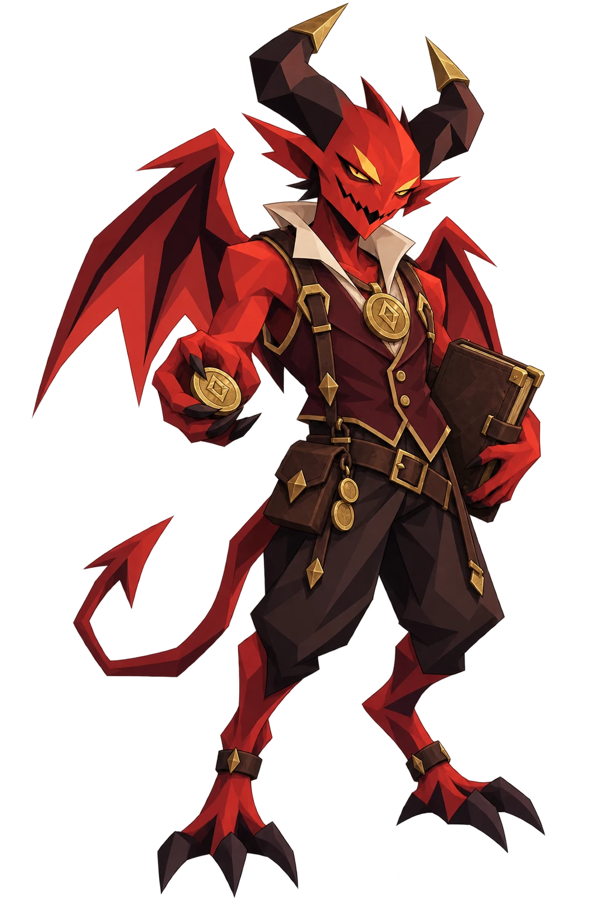
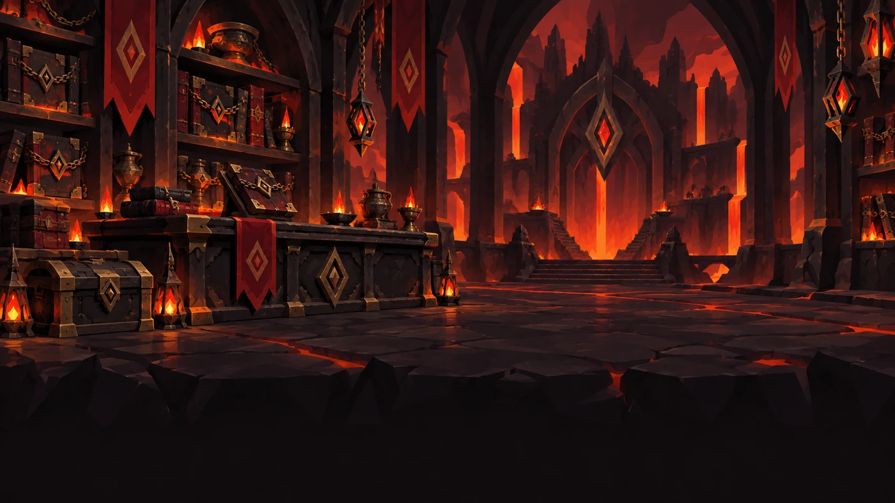
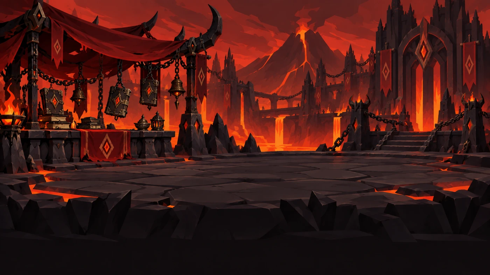
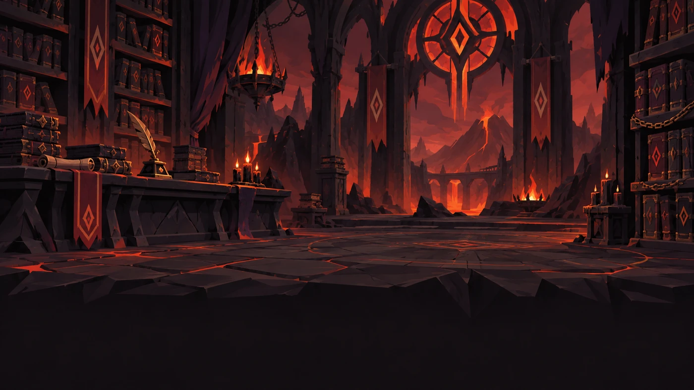
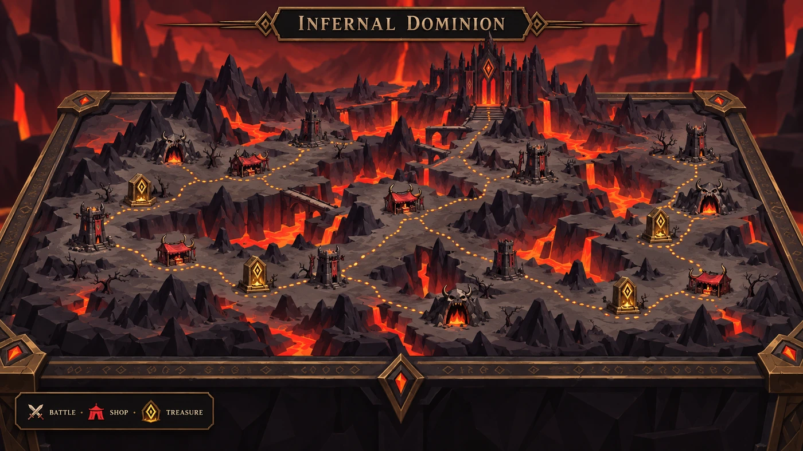
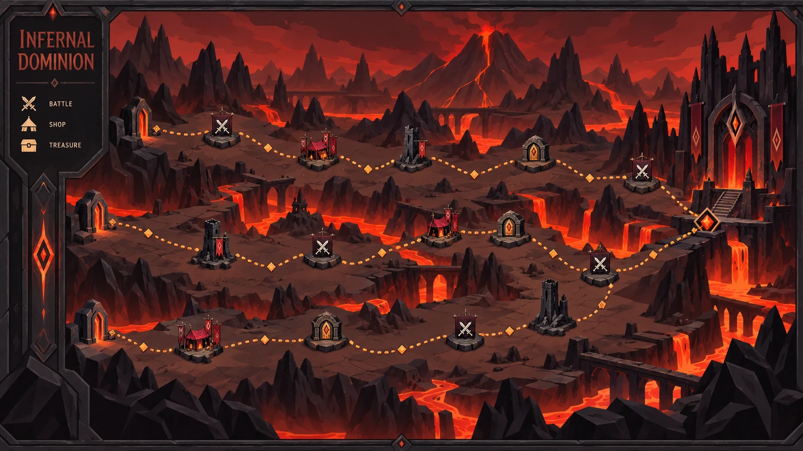
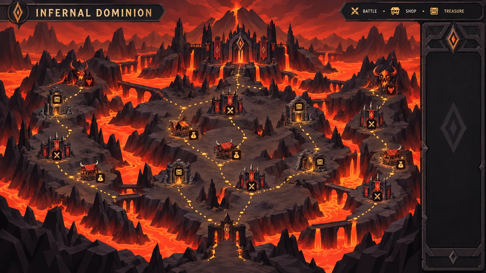

Shopkeeper
Three portrait concepts. Their large scale is shown in the shop composition below.
Shop setting
Choose independently of the merchant.

1 · The Cinder Vault

2 · The Chain Bazaar

3 · The Infernal Scriptorium
Map UI
Static art proposals. Runtime routes and encounter structures will remain separate, movable layers.

1 · The Obsidian Atlas

2 · The Ember Marches

3 · The Caldera Crown
Shop composition preview
Merchant drawn large over the dialogue panel. Buttons below only change this local preview; they do not record approval.
The price of power
Cards · Upgrade · Remove · Relics
Warlock cards
Limited stock
Limited stock
Neutral cards
Limited stock
Limited stock
Five relics
One each
One each
“Power has a price. Fortunately for you, I accept gold.”
Map choice preview
These are flattened visual concepts, not a fixed map. The implemented route generator already varies encounters and links by seed. Approved art will be split into reusable terrain, UI, and encounter-marker assets before animation or polish.